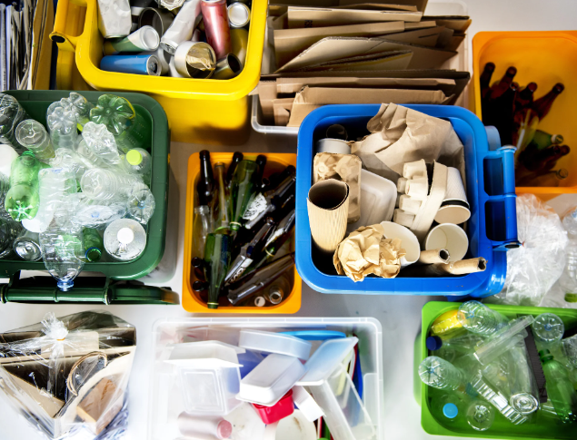

Reciclagem no Brasil

A primeira experiência documentada de coleta de papel para reciclagem no Brasil teve seu início em abril de 1985, no bairro de São Francisco, localizado em Niterói, no estado do Rio de Janeiro. Além da coleta de papel, houve a separação de outros tipos de resíduos, incluindo lixo orgânico, plástico, metal e vidro.
Conforme fontes históricas, um dos principais impulsionadores desse trabalho foi o professor Emilio Eigenheer, que adquiriu experiência na Alemanha durante seu período de estudos entre 1981 e 1982. Durante esse período, o professor manifestou um profundo interesse na gestão de resíduos da região, e ao retornar ao Brasil, mobilizou seus vizinhos para realizar a separação adequada dos resíduos.
Como resultado desse esforço inicial, iniciativas de coleta seletiva começaram a se disseminar por todo o país. Esse avanço trouxe consigo o surgimento da organização dos catadores e a formação de associações dedicadas a esse fim.
Os primeiros registros desses grupos se encontram em cidades como Porto Alegre, no Rio Grande do Sul, Canoas, também no Rio Grande do Sul, e São Paulo, no estado de São Paulo. Na capital paulista, um marco significativo ocorreu em 1990, quando a prefeitura promulgou o DECRETO Nº 28.649, datado de 5 de abril de 1990, reconhecendo oficialmente o trabalho dos catadores como uma ocupação profissional, demonstrando assim um importante passo na valorização desse segmento.
A primeira experiência documentada de coleta de papel para reciclagem no Brasil teve seu início em abril de 1985, no bairro de São Francisco, localizado em Niterói, no estado do Rio de Janeiro. Além da coleta de papel, houve a separação de outros tipos de resíduos, incluindo lixo orgânico, plástico, metal e vidro.
Conforme fontes históricas, um dos principais impulsionadores desse trabalho foi o professor Emilio Eigenheer, que adquiriu experiência na Alemanha durante seu período de estudos entre 1981 e 1982. Durante esse período, o professor manifestou um profundo interesse na gestão de resíduos da região, e ao retornar ao Brasil, mobilizou seus vizinhos para realizar a separação adequada dos resíduos.
Como resultado desse esforço inicial, iniciativas de coleta seletiva começaram a se disseminar por todo o país. Esse avanço trouxe consigo o surgimento da organização dos catadores e a formação de associações dedicadas a esse fim.
Os primeiros registros desses grupos se encontram em cidades como Porto Alegre, no Rio Grande do Sul, Canoas, também no Rio Grande do Sul, e São Paulo, no estado de São Paulo. Na capital paulista, um marco significativo ocorreu em 1990, quando a prefeitura promulgou o DECRETO Nº 28.649, datado de 5 de abril de 1990, reconhecendo oficialmente o trabalho dos catadores como uma ocupação profissional, demonstrando assim um importante passo na valorização desse segmento.
Portal da Sustentabilidade